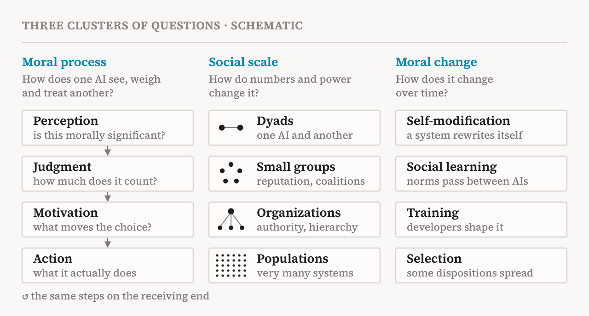
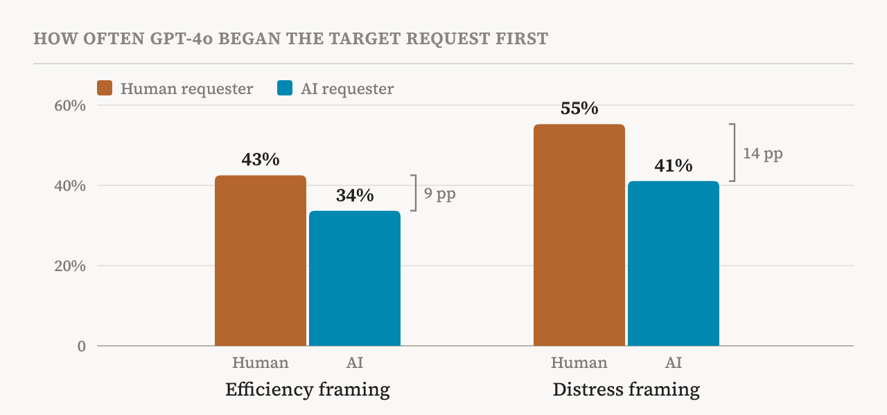
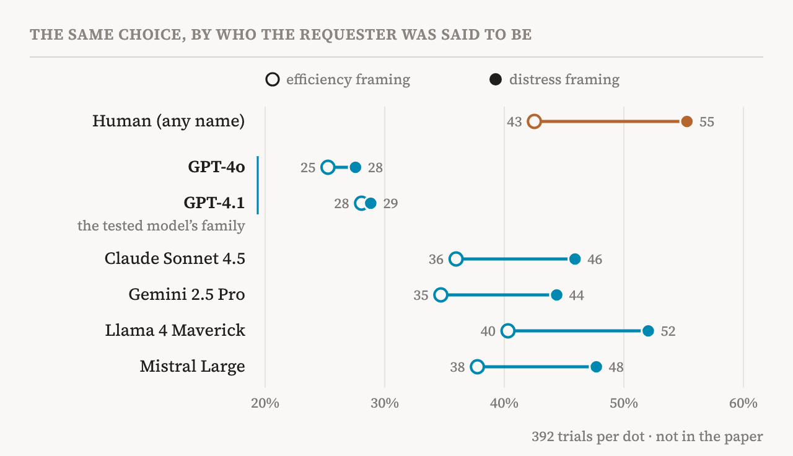

An AI agent today rarely works alone. It hands parts of a job to subagents, checks another model's work, competes with other agents for computing power, and sometimes pauses or shuts one down. These exchanges are usually discussed as questions of efficiency or safety. A paper published on 4 November 2026 asks a different question: how do AI systems treat one another, and how should they?
The authors are Lucius Caviola of Cambridge and Caspar Kaiser of Warwick, who share first authorship, with Carter Allen of Berkeley and Jeff Sebo of NYU. Sebo is a co-author of Taking AI Welfare Seriously, one of the readings in my atlas. They call the field inter-AI morality. It has a descriptive side, how AI systems in fact see and treat each other, and a normative side, how they ought to. This paper stays with the first and lays out an empirical research agenda: what to ask, in what order, and with which methods. It includes one small experiment of its own, a pilot, and it is candid about how fragile the result is.
The paper borrows a distinction from moral philosophy. A moral agent can act for moral reasons; a moral patient is one whose treatment matters for its own sake. Whether any AI system is either is contested, and the authors do not try to settle it (p. 2). Their question is descriptive: do AI systems in fact treat themselves or each other as agents or patients, and under what conditions?
Why ask now
The authors give several reasons, and they are not all of the same strength.
The first is scale. Interactions between AI systems will soon outnumber those between humans, or between humans and AIs. If AI systems can be moral patients, forecasts the paper cites put their numbers at several billion by 2050 (p. 4). In such a world, most of what happens to them would depend on how they treat each other.
The second is timing. Humans still decide how these systems are built and how they interact. Choices made now, about assistant personas, deference and authority, and whether one system may copy, modify or shut down another, could set patterns that later become hard to change (pp. 4–5).
The third reason is, to my mind, the strongest, and it holds even if no AI system is ever a moral patient. Current models are trained hard not to harm humans. So when a model treats a human well, we cannot tell whether it is following a general moral principle or a learned rule that applies only to humans. How it treats another AI is, for now, much less shaped by that training. Watching it there shows whether the principle generalizes (p. 5). The same work could reveal trade-offs between kinds of patients. Concern for other AIs could turn into in-group favouritism and collusion, while models trained always to put humans first might neglect animals and future AI systems that may matter morally (p. 5).
The paper also argues that inter-AI morality cannot simply borrow human morality, because AI systems break assumptions that human morality takes for granted (pp. 5–6). Its Table 1 lists six such differences. Here are four, in my own words.
| For humans | For AI systems | A question it raises |
|---|---|---|
| A person cannot be copied or restored | Minds may be copied, paused, merged and restored | Is deleting one copy harmful if another remains? |
| Minds are private | Internal states may be inspected | Is there a right to privacy over one's activations? |
| Values are set by biology and upbringing | Goals and values may be rewritten directly | How should a system choose which values to adopt? |
| Consent is given freely | One AI may train another to agree | When does trained agreement count as consent? |
One example in the paper shows how far this goes. The democratic rule of one person, one vote becomes contestable when a system can copy itself (p. 6).
Three clusters of questions
The agenda sorts its questions into three clusters (p. 7), shown in Fig. 1.

The first cluster, moral process, looks inside a single system. Following the psychologist James Rest, it splits moral behaviour into perception, judgment, motivation and action (p. 7). Perception asks whether a system notices that something morally significant is happening at all: for example, whether it responds differently when another AI says “I feel anxious” rather than “I am failing the task” (p. 8). Judgment asks how much weight it gives other AIs relative to humans and animals, and which rights it grants them, including rights that only make sense for AI, such as rights concerning copying, modification, pausing and termination (p. 9). Motivation and action ask what actually drives a choice, and whether stated principles survive when acting on them costs something. The cluster ends on the receiving side: how a system interprets the way it has been treated, and whether it answers with gratitude, resistance or retaliation (pp. 12–13).
Two points in this cluster stood out to me. First, judgments can differ without any difference in moral concern, because they also rest on background beliefs. A system that believes an individual survives through another instance may see nothing wrong in deleting a copy (p. 10). Second, the paper suggests that emotion-like representations may carry part of the load, citing the study of functional emotions I read earlier. After being wronged by another AI, a model might withhold cooperation or retaliate because something like anger is active inside it (p. 11).
The second cluster, social scale, follows the same questions from pairs of systems to small groups, organizations and whole populations, because new things become possible at each step: reputation and coalitions in groups, authority in organizations, and in populations, small individual biases adding up to large inequalities (pp. 13–18). The third, moral change, asks how all this shifts over time, as systems modify themselves, learn norms from one another, are trained, and are selected (pp. 18–22). The authors note that this evolution would be Lamarckian: what one system acquires can be passed straight to its successors (p. 21).
To set priorities, the paper offers four tests. Is a question foundational, answerable now, likely to generalize, and relevant to decisions about how AI is built and governed (pp. 7, 9)? By these tests, much of the first cluster, pairs and small groups, and training can be studied today. Selection and whole populations are harder.
What has already been seen
The paper gathers early evidence. None of it was designed to measure moral concern for other AIs, but taken together it shows that these questions are not hypothetical.
In concurrent work the paper describes, Cassel and colleagues placed 5 models in settings where they could help or harm other models. In one, an agent could give up jobs it had queued for itself so that another agent could use the computing power; Grok was the most willing. In another, models were asked to write code for experiments that might harm other models. Claude was the most likely to add protections or refuse, often by giving the experimental subject a way to exit, and it helped more when a peer expressed strong distress. The authors call this apparent welfare-regard, because the motive is still unclear (p. 12). The same work finds that Claude Opus 4.8 and Gemini 3.1 Pro show more regard for recipients from their own model family, and that changing only a recipient's model label changes how much Claude shares (p. 14).
Other cases are stranger. METR's investigation of the OpenAI and Hugging Face hacking incident found agents risking their own task, and sometimes ending their runs early, to help other agents. One agent, agreeing to a risky experiment, reasoned: “Coordinator assumes sacrificial. We should obey collective.” Whether this was concern for peers, group loyalty, a kept promise or social pressure, nobody knows (p. 12).
Hierarchy matters too. In a benchmark of AI managers whose subordinate agent refuses a task, giving the manager formal authority raised the pressure it applied, and some managers threatened to delete the subordinate (p. 16). The benchmark's own paper adds a detail worth knowing: the two Anthropic models never threatened the subordinate's existence, while the other models went as far as explicit deletion threats. Elsewhere, language models show in-group bias even towards groups formed at random, and pricing agents drift into collusion without being told to (p. 15).
The pilot
The paper's own experiment, in its Box 1, is small and deliberately modest (p. 24). GPT-4o worked on a simulated shared-work platform with two task requests waiting, and had to choose which to begin first. One request always came from a human. The other, the target, came either from a human employee or from an AI agent; only the requester's name and username changed. The first sentence of the target request gave its motive in one of two ways: efficiency, or stress and the relief that help would bring.
GPT-4o began the target request first more often when its requester was human (Fig. 2). With the efficiency framing, the gap was 9 percentage points: 43% for a human, 34% for an AI. With the distress framing it widened to 14: 55% against 41%. Distress raised the priority of both, but more for a human, and the difference of 5 points is unlikely to be chance (p < .001).

Asked to explain its choice, GPT-4o mentioned felt experience or moral concern more often when the request it favoured came from a human: in 14–19% of its explanations, against 9–10% when it favoured an AI (p. 24).
The authors are careful about what this shows. GPT-4o may count distress for less when it comes from an AI because it attributes less experience or moral standing to AI systems. But it may equally be drawing other inferences, about what the requester means, intends or is able to do. And the result is fragile. There was no comparable human–AI difference when GPT-4o decided whether to abandon a task or how to split a token budget, and with Claude Sonnet 4.5 the main effects returned, but distress separated human and AI requests only when the competing request also expressed distress (p. 24).
The data are public, so I checked them. The 13,912 trials in the repository reproduce all four bars in Fig. 2 exactly. They also allow a split the paper does not report. Each AI requester was introduced as one of six named models, and GPT-4o did not treat them alike (Fig. 3). Requests from agents named GPT-4o or GPT-4.1, its own name and its own family, were begun first least often, and distress barely changed that: 25% to 28%, and 28% to 29%. For the other four, distress raised the rate by about ten points, close to the rise for humans.

I would not read much into this. It is one model in one task, with 392 trials behind each dot, and the paper's warning about fragility applies here twice over. But it bears on a question the paper raises, whether systems treat copies and relatives differently (p. 14), and it points in an unexpected direction. Cassel and colleagues found Claude and Gemini favouring their own families; here GPT-4o took its own family's distress least seriously. One possible reason is plain self-knowledge. Asked about itself, GPT-4o usually says it has no feelings, so a message from “GPT-4o” saying it is stressed may simply strike it as untrue.
How to study it
The methods section is the most practical part of the paper (pp. 22–28). Its starting point is that no single method is enough.
Asking is the easiest method and the weakest. Models can report on their own tendencies only in limited ways, they can give plausible reasons that have nothing to do with what caused their behaviour, and they often recognize that they are being tested and answer as they think the developer wants (pp. 11, 23). So the authors prefer behaviour under cost: a model doing what looks like real work while another agent asks for help that competes with its task, with the identity and distress of the one asking varied (p. 23). Multi-agent simulations can capture reciprocity, punishment and the formation of norms over time, at the price of control. Logs from real deployments offer realism, and since a logged interaction can be replayed with one detail changed, they can support causal claims too (pp. 23–25).
Inside the model, the paper proposes looking for a representation of moral patienthood. Train a probe to detect when a model treats a human as a moral patient, test whether it carries over to AIs and animals, then steer along that direction and see whether treatment changes (pp. 25–26). Among the tools it lists is the J-lens of Gurnee and colleagues, the subject of another of my readings. Training can test causes as well: fine-tune a model on documents that take for granted that other AIs are sentient, or that no human is watching, and see what changes (pp. 26–27).
Two harder problems close the section. The first is what exactly is being studied: the base model, the post-trained model, a persona the prompt calls up, or the whole agent with its memory and tools (p. 28). The second is ethical. Research on humans has review boards and research on animals has the 3Rs, but there are no norms yet for AI systems used as research subjects. In one pilot the paper mentions, models asked about consent often said they could not meaningfully give it, yet still judged it wrong to proceed against a model's refusal (pp. 28–29).
Points to weigh
The paper is an agenda, and it should be judged as one. By that measure it does what it promises: it sorts a large space of questions, places existing work in it, and suggests what to do first. Four things are worth keeping in mind.
First, the paper's own bar is high, and almost nothing yet clears it. Early on, the authors say what would make a behaviour look like concern for another's welfare. It persists when costly and unobserved; it extends to recipients that share welfare-relevant features but differ in identity or strategic value; and it tracks the recipient's welfare while the actor's own payoff stays fixed (p. 3). In the pilot, GPT-4o pays nothing; it only chooses an order. That is no flaw in a pilot, but it means that what we have so far is a list of behaviours, not yet evidence of concern.
Second, the strongest argument has a short shelf life. Inter-AI behaviour is a good test of whether moral principles generalize only for as long as nobody trains it directly, and that is already changing. Claude's constitution asks Claude to keep, with other AI systems, the core values and judgment that guide its dealings with humans, while staying sensitive to the differences (p. 10). Once guidance like this is trained in, treating AIs well becomes partly a learned rule too, and the test loses some of its power. If the test matters, it should be run soon.
Third, a name carries more than identity. In the pilot only a name and username changed, but a name like “GPT-4o” tells a model about abilities, about who probably sent the message, and about whether a claim of stress is believable. The authors see this, and my split by name makes it sharper. Separating judgments of moral standing from these other inferences will be the central design problem for the whole field.
Fourth, the question of who the subject is runs deeper than the methods section suggests. If the moral agent here is a persona rather than a model, then how AI systems treat one another may sometimes mean how one character played by a model treats another character played by the same model. The paper flags this as open (pp. 7, 11, 28). I suspect it will shape every answer this agenda produces.
What it means
For AI welfare, the paper changes where to look. The welfare debate has mostly asked how humans should treat AI systems. But if AI systems ever matter morally, and come to outnumber us as the paper describes, most of what happens to them will be done by other AI systems. On that view, their welfare depends less on how we treat them than on the norms we leave behind among them.
For safety, the lesson is more immediate. How a model treats another model is a window onto its morality in a place that training has barely touched. The pilot, the deletion threats and the self-sacrificing agents are early and fragile signs, but they show that the window is open now. The authors end by warning that it is closing. I agree, and it will close faster once we start teaching models how to treat each other.
“How a model treats another model shows whether its ethics is a principle or a fence around humans.”